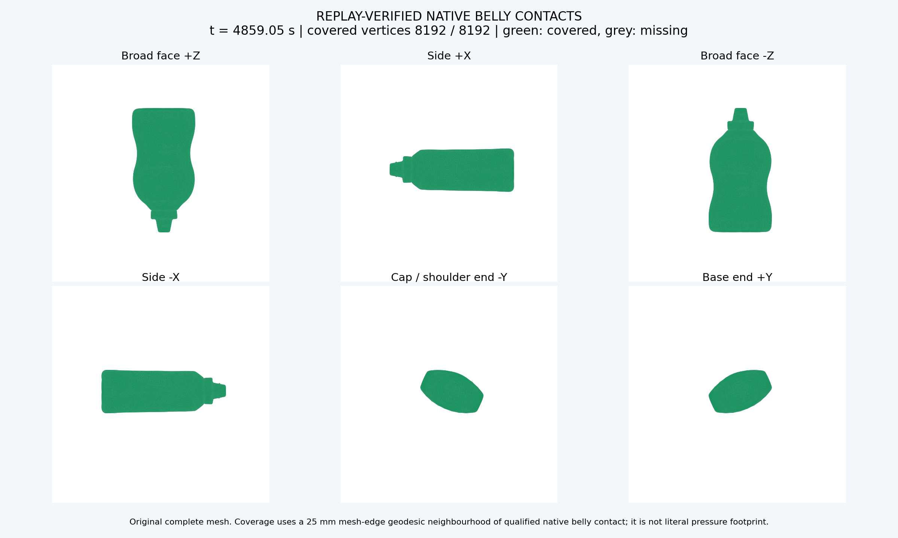
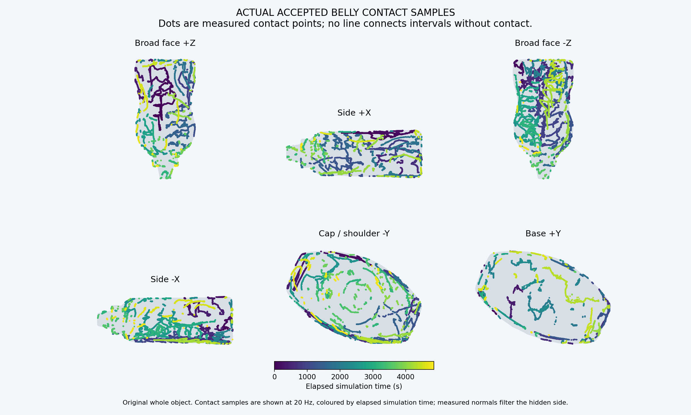
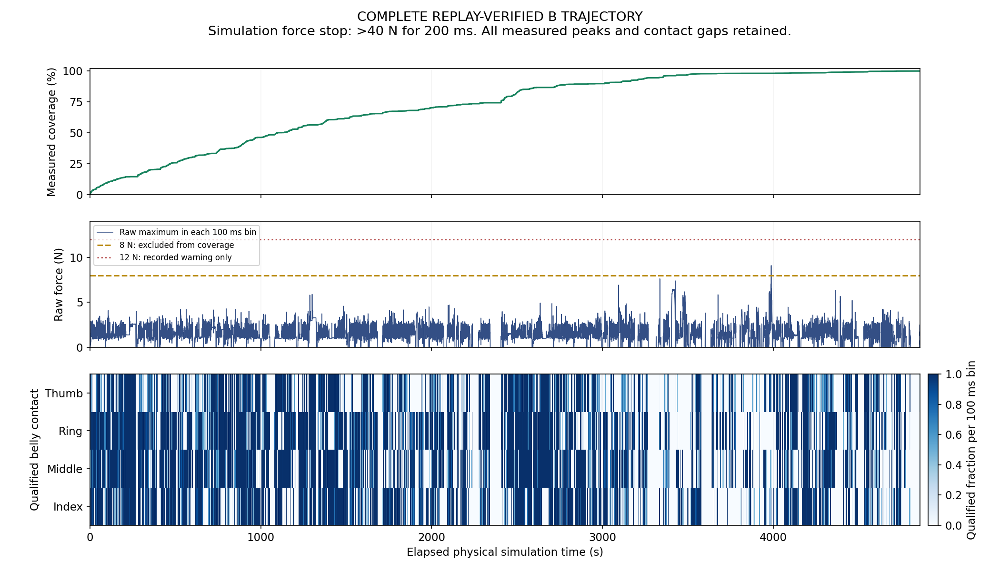

I04B · Mustard 完整测试
整瓶遍历完成：100.000%，8192/8192顶点、
388/388目标；实际仿真4859.048秒。
手掌与四指共同规划，主动指腹贴合、自然屈指、贴面优先换面。单一冻结版本从共同悬停初态、零覆盖开始。
按用户要求容忍仿真高力：超过12N只记录，超过40N持续200ms才停止。原始力完整保留；覆盖仍使用原8N排除规则。
完整时间轴总览 · 12倍速
视频时长405.00秒；从仿真0秒到4859.046秒，保留全部离面、卸力、恢复及结束状态。
正常速度完整视频 · 1倍速
视频时长4859.10秒；从仿真0秒到4859.046秒，保留全部离面、卸力、恢复及结束状态。
整瓶是否摸全

| 区域 | 已覆盖顶点 | 面积指标 |
|---|
| 宽面 +Z | 2637/2637 | 100.00% |
| 侧面 +X | 1128/1128 | 100.00% |
| 宽面 −Z | 2005/2005 | 100.00% |
| 侧面 −X | 1093/1093 | 100.00% |
| 瓶盖/瓶肩端 −Y | 630/630 | 100.00% |
| 瓶底端 +Y | 699/699 | 100.00% |
绿色为合格实际指腹接触的25mm网格边测地邻域；灰色为未覆盖。保留整个原始网格分母。
该指标不是皮肤压力足迹面积，规划目标和历史成功轨迹不增加本次覆盖。
单独忽略8N力排除后的几何合格指腹覆盖为100.000%：
8192/8192顶点、388/388目标，比原严格指标增加0个顶点。
此项只用于查看仿真力阈值对计分的影响，控制器和上面的严格完成判据保持原样。

四指是否共同参与
| 手指 | 实际指腹接触率（含高力） |
原严格合格接触率 | 合格接触时切向材料运动 | 末两关节实际角度范围 |
|---|
| 食指 | 56.59% | 53.71% | 8.997m | 5.6–54.5° / 3.9–43.0° |
| 中指 | 60.71% | 58.15% | 9.720m | 5.7–54.5° / 4.0–43.0° |
| 无名指 | 61.09% | 58.39% | 10.234m | 5.6–54.4° / 3.9–43.0° |
| 拇指 | 50.78% | 49.41% | 8.514m | -0.3–57.3° / -0.1–57.3° |
全程至少2指合格接触69.38%，
至少3指52.70%，
四指20.13%。统计包含接近、离面和恢复，不要求始终四指同时接触。
实测中央指腹接触沿用原0.2N检测门槛；“含高力”与放宽力统计只移除上限排除，保留接触位置和朝向判定。
最长完全没有实测中央指腹接触62.808s；
按原严格判据，最长无合格指腹接触62.808s。覆盖完成与接触连续性分别评价。
遍历、补扫与原始力
| 阶段 | 仿真时段 | 阶段结束覆盖 |
|---|
| 整瓶贴面遍历 | 0.000–3501.220s | 97.107% |
| 遗漏区域补扫 | 3501.222–4859.046s | 100.000% |

原始力峰9.0952N，发生于3987.996s；
超过12N累计0.000s，最长连续0.000s；
达到8N的状态共0.006s，均不增加覆盖。所有高力观测仍保留。
换姿计划86次，贴面路径/转向尝试278次；
终止原因FULL_MEASURED_BELLY_SURFACE。
怎么实现与核验
恢复原B起步/推进窗口、逐指法向限速和参考手指更新；
目标排序不再突然重投影当前触点。先整瓶遍历，再用同一物理状态补扫。MCC、主动卸力、自然关节范围及两类几何守护保持原实现。
2,429,524个2ms原生状态从t=0连续独立重放，分块不重置；
所有实际命令的实态与上一参考几何检查通过。力、接触和覆盖重新测量，非指腹/机械臂危险接触记录0个。
仅验证固定Mustard、零重力、MCC。DP继续暂缓。本版B尚未与采用完全相同非对照条件的新A配对，
不以它和历史A的差异作单因素性能结论。
运行说明 · 冻结配置与源码哈希 ·
完整轨迹分块清单 · 原始力与接触统计 ·
忽略仿真力阈值的覆盖统计 ·
整手指标 · 独立核验 ·
视频来源和帧数 ·
视频解码核验